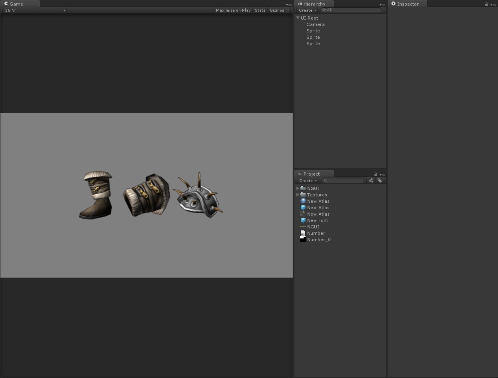
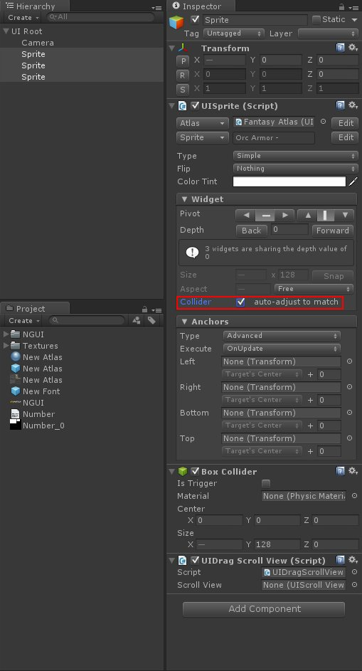
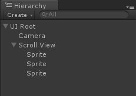
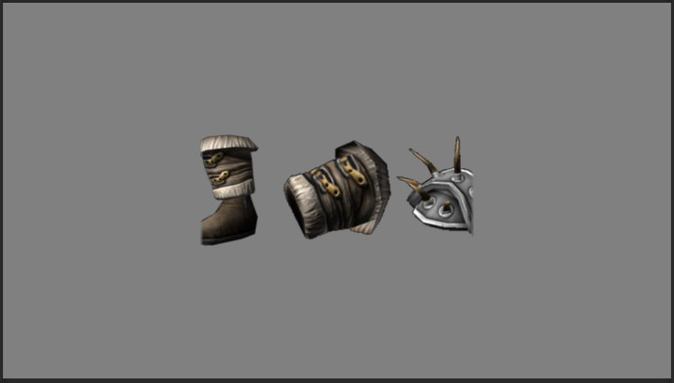
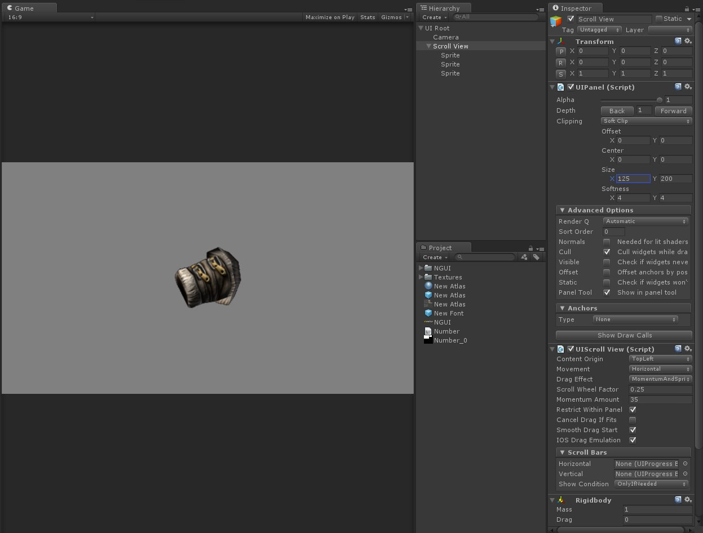
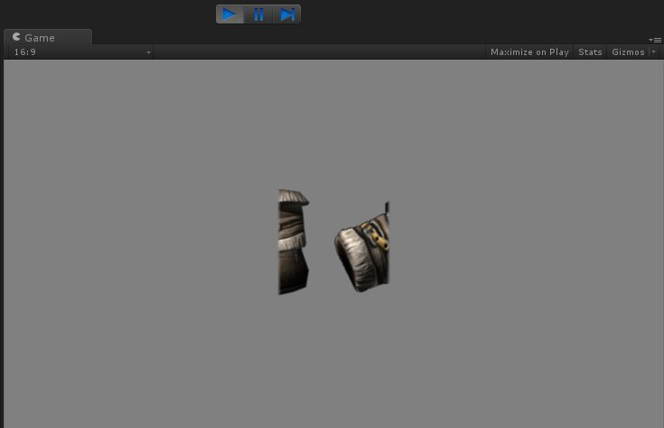

這篇要來講解如何創建一個可滑動的區塊
也就是 NGUI 中的 UI Scroll View 功能
首先我們在場景中建立想要顯現的圖片
這裡示範用三張圖片

建立好後為了使用 Scroll View 的功能
需要對圖片加入兩個腳本
Collider 以及 Scroll View
圖片中的 auto-adjust to match 可以使 Collider 自動對應圖片大小

選取 NGUI → Create → Scroll View
會在場景中生成一個 Scroll View 物件
將原本的三張圖片拖拉至 Scroll View 物件下


會發現圖片被切割到
這是因為 Scroll View 中的 UI Panel 腳本
可以設定顯示的大小
可以把它解釋成一個針對滑動區塊的 Mask
將 Size 調整成適當大小

按下開始按鈕
就完成了可滑動區塊的製作
